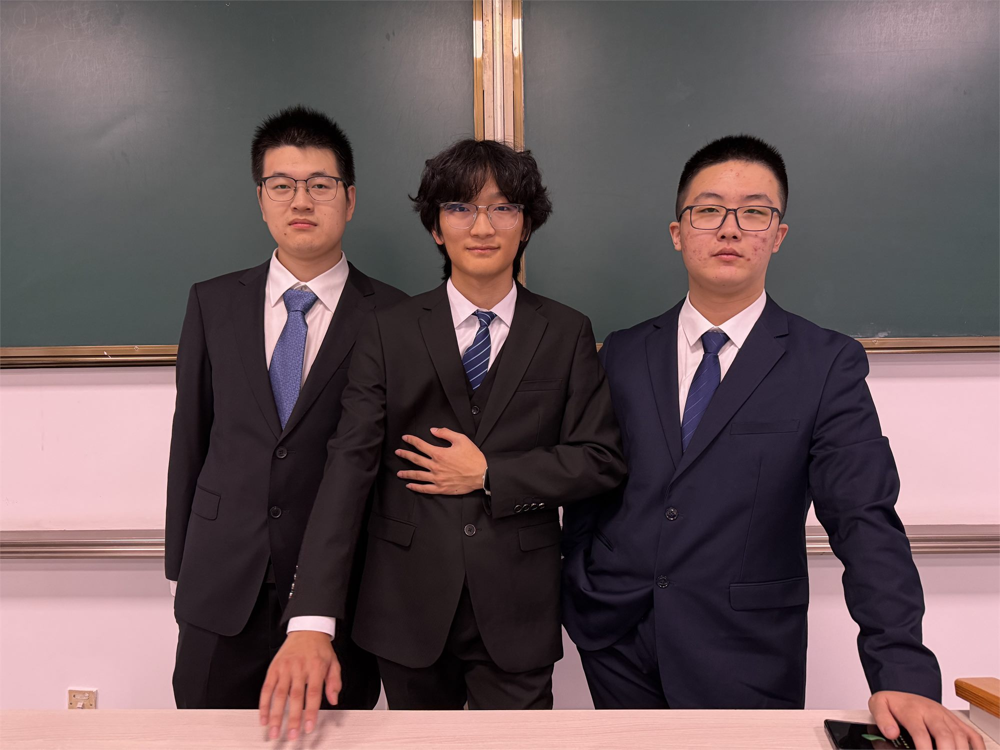
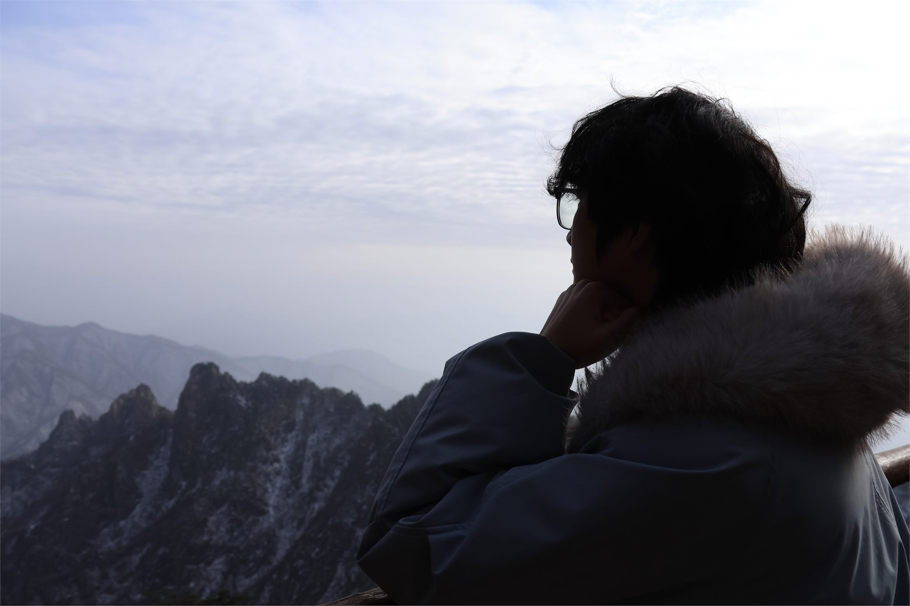

基于本人材料整理呈现，本页不展示排名，只保留更稳妥的绩点与课程表现。
SCROLL TO READ THE ARCHIVE
PROFILE
从射阳出发，在东南大学持续把学习、实践与公共事务做深做实。
陈允鑫，东南大学吴健雄学院学生。成长路径始于射阳县第二中学，进入大学后，延续了对数理基础、工程实践与公共服务的并行投入。当前页面的内容，主要依据本人答辩文稿、申请材料、证书照片与公开可核验信息整理而成。
大学阶段的核心重心较为明确：一方面保持稳定而扎实的学业表现，在课程学习与学科竞赛中持续拉高标准；另一方面通过 SRTP、学生工作与志愿服务，将书本能力转化为面向团队、项目和公共场景的执行能力。
这版页面刻意保持克制，只精选少量代表性证书与材料作为支撑，不直接公开整套申请表、审批表和完整答辩原件，希望让网页既适合公开展示，也保留答辩材料应有的正式感。
关键词
学思并进，尽责致远
班级工作
615233 班宣传委员
学院工作
吴健雄学院团委宣传部副部
书院职责
健雄书院执行院长
当前关注
数理基础、科研训练、组织执行与公共服务的结合
HIGHLIGHTS
学业与科研亮点，用最简洁的数字和事实说话。
集中出现在大二学年，体现出较稳定的课程投入与持续输出能力。
覆盖理论学习与工科训练中的代表性课程，强调质量而非简单数量堆叠。
一项主持《基于多智能体强化学习的 Wi-Fi 信道接入研究》，一项参与古琴减字谱数字化识别研究。
在学生工作与志愿服务中持续参与，以稳定投入支持书院与学院公共事务。
能力画像
对外信息
院系
东南大学吴健雄学院
公开展示版保留学院信息，用于说明学习与成长场景。
城市
南京
主要学习与活动地点。
邮箱
可补充
当前页面未主动公开更多私人联系方式，后续可按用途补充。
主页 / 社媒
可补充
适合作为 GitHub、博客或二维码入口位置。
MOMENTS
证书之外，也保留一些更接近真实状态的画面。
如果说前面的内容更像答辩材料的摘要，这一节就更像答辩之外的补充说明。它不负责证明什么，而是让页面多一点气质、多一点呼吸感，也让“个人主页”不只剩下证书与数字。

GROUP MOMENT
个人风采也不一定总是单人镜头，团队场景同样能说明气质。
这张图保留了更偏正式的一面：西装、现场、同伴与状态。它和前面的生活照一起出现，能让整个页面从“材料页”更自然地过渡成“个人主页”。

RECORD
代表性成果分成两层来看：一层是文字脉络，一层是精选原始材料。
竞赛与学术荣誉
-
2024.06
江苏省高等学校第二十一届高等数学竞赛本科一级 A 组二等奖
作为大学阶段数理能力的重要外显成果，标记出理论基础训练的持续性。
-
2024.07
东南大学第二十三届结构创新竞赛校级优秀奖
将课程能力延伸到结构设计与团队协作场景，是工程实践中的一次有效尝试。
-
2024.12
第十六届全国大学生数学竞赛（非数学 A 类）一等奖
大学阶段最具代表性的竞赛成果之一，也是页面精选证书中的核心材料。
奖学金与校级荣誉
-
2024.09
东南大学“三好学生”
对应 2023-2024 学年综合表现，是对学业与综合素质的同步肯定。
-
2024.10
国家奖学金
本科阶段最具分量的国家级奖学金之一，也是本页材料展示的主证书。
-
2024.12
东南大学“至善学子”奖
更适合放在展示页里作为阶段性成长与综合投入的直接佐证。
-
2025.09
东南大学优秀学生干部
对应学生工作持续投入后的阶段性认可，与书院、学院岗位经历形成呼应。
项目与组织角色
-
615233
615233 班宣传委员
在班级层面承担宣传与事务协同，是学生工作最基础也最长期的岗位。
-
WJX
吴健雄学院团委宣传部副部
从宣传组织与活动支持中积累协作经验，强化面向团队的执行能力。
-
JXSY
健雄书院执行院长
在书院场景中承担更完整的组织职责，是这版页面的角色焦点之一。
-
2025.09
两项校级重点 SRTP 结题
主持项目获“良好”，参与项目获“合格”，形成从学业延伸到科研训练的实际链条。
代表性成果
以下仅展示大学阶段最能代表当前成长面向的六份材料。点击图片可放大查看，页面不公开完整申请表或整套答辩原件。
TIMELINE
把证书、项目和岗位串起来，就能看到一条更完整的成长曲线。
2021-2022
高中阶段形成数理兴趣、竞赛意识与综合素养基础
在射阳县第二中学期间，先后获得“最美中学生”、全国中学生奥林匹克竞赛江苏赛区一等奖、江苏省三好学生等荣誉，成为后续大学阶段持续进步的起点。
2023
进入东南大学吴健雄学院，开始在更高平台上重新组织自己的能力结构
学业、竞赛、项目与学生工作不再割裂，而是逐步被放进同一条成长主线里。
2024.06-07
数学与工程类竞赛先后取得成果
江苏省高等数学竞赛本科一级 A 组二等奖与结构创新竞赛校级优秀奖，分别对应理论基础与工程实践两类训练方向。
2024.09-12
综合表现集中获得确认
三好学生、国家奖学金、至善学子奖与全国大学生数学竞赛一等奖先后落地，让这一学年的阶段性成果更清晰地呈现在材料之中。
2025
从成绩展示转向项目推进与组织责任的并重
两项校级重点 SRTP 完成结题，学生工作角色继续向更高层级延伸，同时获得优秀学生干部、优秀共青团干部等认可，形成“学业 + 项目 + 公共事务”的稳定结构。
ROOTS
高中起点只占一个小节，但它解释了很多事情为何会延续到现在。
这一部分不打算做成完整的“高中专区”，只保留三份能说明起点的材料。它们不是为了和大学阶段成果争夺主视觉，而是为了说明：无论是数理兴趣、竞赛训练，还是综合素养与公共意识，都不是在大学里突然开始的。
射阳县第二中学阶段的积累，更像是后来大学阶段持续投入的前置条件。把这段经历克制地保留下来，能让整张页面不只是一个获奖清单，而是一条连贯的成长轨迹。
RESEARCH SIGNAL
科研训练不是孤立展示，而是学业能力被进一步推向真实问题的过程。
两项校级重点 SRTP，分别对应“主持推进”与“协作参与”两种能力侧面。
主持项目为《基于多智能体强化学习的 Wi-Fi 信道接入研究》，参与项目为《古琴减字谱的数字化识别研究》。前者更强调问题建模、方案推进与阶段管理，后者则更强调跨方向协作与具体任务执行。二者共同构成了大学阶段科研训练的基本轮廓。
SOURCES
页面内容来自两类材料：官方公开信息，以及本人提供的答辩与证书材料。
官方公开页面
本人提供材料
本页文案提炼主要来自以下材料：`个人基本信息.txt`、`国校奖答辩文稿.docx`、`国奖答辩稿子.docx`、`三好学生标兵答辩稿.docx`，以及本人提供的正装照片、证书照片和部分过程材料。
出于公开展示的克制原则，页面仅放入少量代表性证书原图，并将其余信息转化为简洁的文字说明，不直接公开整套申请表、审批表和完整答辩原件。
页面中出现的成绩口径统一采用你确认后的保守方案：展示 GPA 4.3861、21 门课程 90+、7 门满绩，不展示排名。